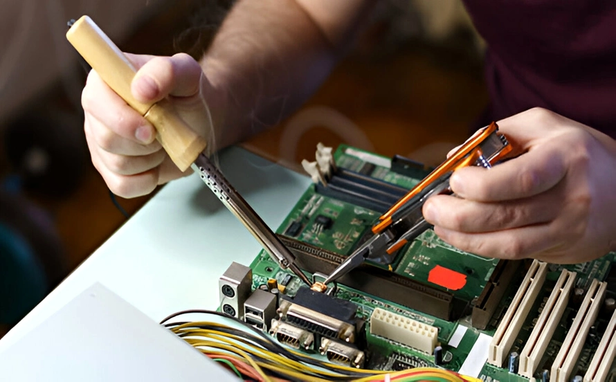
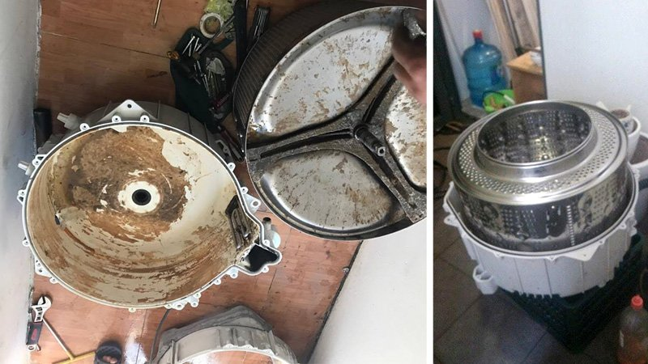

Địa Chỉ Sửa Chữa Máy Giặt Uy Tín Tại Hà Nội – Thợ Giỏi, Phục Vụ Tại Nhà
Máy giặt là thiết bị giải phóng sức lao động cực kỳ quan trọng trong mỗi gia đình. Khi máy giặt gặp sự cố như không vắt, không cấp nước hay phát ra tiếng kêu lạ, mọi sinh hoạt sẽ trở nên đảo lộn.
Bạn đang tìm kiếm dịch vụ sửa máy giặt tại nhà Hà Nội chuyên nghiệp, trung thực và giá rẻ? Điện Lạnh Bách Khoa với đội ngũ kỹ thuật viên dày dặn kinh nghiệm chuyên xử lý dứt điểm các lỗi trên máy giặt cửa ngang, cửa đứng của tất cả các hãng.
📞 0559763681 - BẤM GỌI NGAY Hoặc Hotline: 03672741521. Tại sao cần sửa chữa và bảo dưỡng máy giặt kịp thời?
Máy giặt hoạt động trong môi trường ẩm ướt, tích tụ nhiều xơ vải và cặn xà phòng. Nếu không được bảo dưỡng định kỳ, thiết bị sẽ gặp các vấn đề về vệ sinh và hiệu suất, gây tốn điện nước và hư hỏng linh kiện bên trong.
 Kiểm tra định kỳ giúp kéo dài tuổi thọ máy giặt đáng kể
Kiểm tra định kỳ giúp kéo dài tuổi thọ máy giặt đáng kể
2. Những hư hỏng thường gặp trên máy giặt
Máy giặt không cấp nước hoặc cấp nước liên tục
Nguyên nhân thường do hỏng van cấp nước, tắc lưới lọc hoặc lỗi bo mạch không điều khiển được hệ thống cấp nước.
Máy giặt rung lắc mạnh, kêu to khi vắt
Đây là lỗi rất phổ biến, có thể do máy bị đặt lệch, hỏng bộ giảm xóc (thụt) hoặc bi phớt của lồng giặt đã bị mòn sau thời gian dài sử dụng.
Máy giặt không xả nước hoặc không vắt
Thường do tắc nghẽn đường ống thoát, hỏng bơm xả hoặc lỗi công tắc cửa (đặc biệt phổ biến đối với máy giặt cửa ngang).

Kỹ thuật viên kiểm tra lỗi bo mạch điều khiển phức tạp3. Điện Lạnh Bách Khoa chuyên sửa các hãng máy nào?
Chúng tôi am hiểu sâu về kỹ thuật và có sẵn linh kiện thay thế chính hãng cho:
- Máy giặt cửa ngang (Front Load): Electrolux, LG, Samsung, Bosch, Beko.
- Máy giặt cửa trên (Top Load): Panasonic, Toshiba, Sharp, Aqua/Sanyo, Midea.
- Các dòng máy giặt nội địa Nhật: Chuyên sửa các dòng máy sử dụng điện 110V của Panasonic, Hitachi, National.
4. Lý do khách hàng tin dùng dịch vụ của chúng tôi
- Phục vụ nhanh chóng: Có mặt tại nhà chỉ sau 20-30 phút gọi điện tại tất cả các quận nội thành Hà Nội.
- Linh kiện chính hãng: Cam kết thay thế linh kiện chuẩn hãng, có tem mác và xuất xứ rõ ràng.
- Thợ giỏi, thật thà: Đội ngũ kỹ thuật được đào tạo bài bản, tuyệt đối không gian lận, báo đúng giá, sửa đúng bệnh.
- Bảo hành uy tín: Cung cấp phiếu bảo hành dài hạn từ 6-12 tháng giúp khách hàng yên tâm tuyệt đối.
5. Quy trình sửa chữa máy giặt chuyên nghiệp
- Bước 1: Tiếp nhận yêu cầu qua Hotline và tư vấn sơ bộ tình trạng máy.
- Bước 2: Kỹ thuật viên đến tận nhà kiểm tra thực tế và báo giá chi tiết trước khi làm.
- Bước 3: Tiến hành sửa chữa hoặc thay thế linh kiện ngay khi khách hàng đồng ý.
- Bước 4: Vận hành chạy thử máy để kiểm tra độ rung lắc, cấp nước và thoát nước.
- Bước 5: Viết hóa đơn bảo hành, dán tem và bàn giao thiết bị cho khách hàng.

Vệ sinh máy giặt định kỳ giúp quần áo luôn sạch thơm và tránh vi khuẩn6. Mẹo sử dụng máy giặt bền bỉ và hiệu quả
- Không giặt quá tải: Chỉ nên giặt khoảng 80% công suất máy để máy hoạt động êm ái, tránh hỏng trục.
- Dùng đúng loại xà phòng: Sử dụng nước giặt chuyên dụng cho cửa ngang hoặc cửa trên để tránh bọt tràn vào mạch điện.
- Vệ sinh khay chứa: Thường xuyên rửa sạch khay đựng xà phòng và màng lọc nước đầu vào.
- Mở cửa máy sau khi giặt: Giúp lồng giặt được khô thoáng tự nhiên, tránh mùi ẩm mốc và vi khuẩn phát triển.
ĐẶT LỊCH SỬA MÁY GIẶT NGAY
Phục vụ 24/7 - Có mặt ngay sau 20 phút tại khắp Hà Nội
HOTLINE: 0559763681